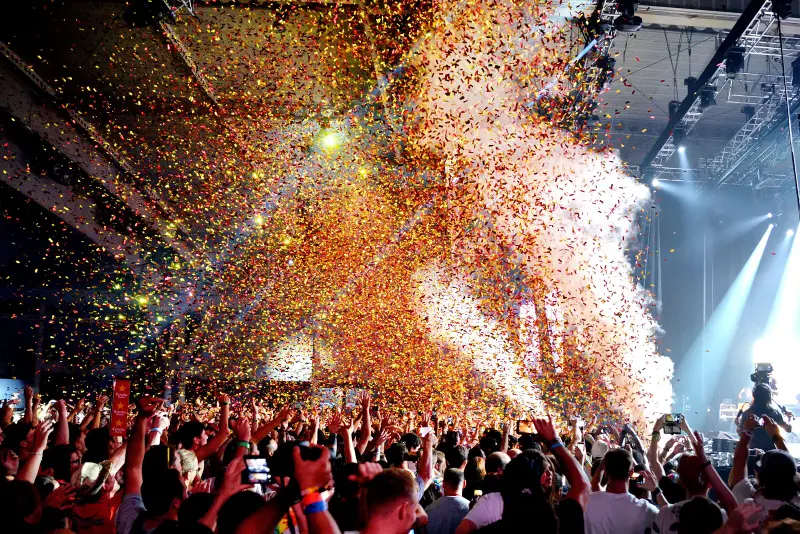
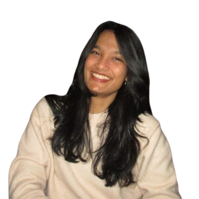

Keyaa Kapadia is a multidisciplinary designer from Mumbai, India, currently based in New York City. She is a junior at Parsons School of Design, majoring in Communication Design.
She considers herself a generalist, deliberately. Her practice moves between UI/UX, branding, web design, creative coding, and multidisciplinary art, always looking for the connective tissue between them.
She's drawn to the in-between: the moment a system starts to feel human, or a poster becomes an interface. When she's not designing, you can find her attending concerts, sketching, baking, or starting projects she'll definitely finish later.


Photo by Ahana Sonpal